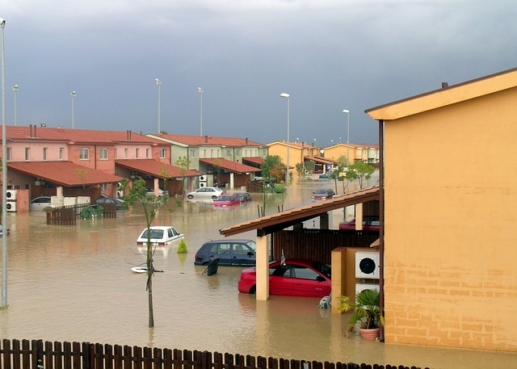

For Safer Futures

THE FIGHT AGAINST NATRUAL DISASTERS
Every year on the 13th of October the UN celebrates the interantional day of Natrual Disaster Reduction where we celebrate our fight for a safer world to live in.
Throughout history disasters like floods, hurricanes, earthquakes and volcanic eruption has plagued humanity and been a cause of many deaths, injuries, destruction of property and economic losses. These phenomena are extremely dangerous and multiplies their damages when they happen in developing countries.
To recognize the problem these disasters caused the General Assembly of the United Nations desgnated in 1989, October the 13th to be known as the international day for disaster reduction. This was done in hopes of improving the global culture of risk awareness and disaster reduction, including prevention and mitigation. Using information campaigns, with the goal to increase people’s awareness of natural disasters, they promoted the efforts to increase resilience and responsiveness of all communities, governments and countries when facing disasters like this.
Prevention of natural disasters: resilience and fight against climate change
Since the Intergovernmental Panel on Climate Change (IPCC) was formed they have warned us about the increasing concentrations of greenhouse gasses in the in the atmosphere because of human activity and the impact it has on the climate extremes. So if we want a safer climate the first thing we need to do is to reduce the emissions.
Sadly, there is no instant solution to climate disasters so focusing only on reducing the emissions of greenhouse gasses will not be enough. In addition to this we will also need to strengthen our resilience, adaptation and our ability to predict these events. This means most people need to learn the different danger the most common disasters pose and what levels of preparation is necessary depending on the disaster.
- Tornados: Tornados are destructive vortexes of wind that can blow away cars and collapse buildings. Luckily they usually don’t last more that a few minutes so staying in a basement or a storm shelter should keep you safe.
- Hurricanes: Hurricanes are stronger that tornados and can cause intense flooding so staying in a basement can be dangerous. You should always have some supplies ready to move if you are forced to evacuate.
- Earthquakes: Earthquakes will often strike whiteout any waring signs, because of this you should always check your home for potential hazards and read up on correct emergency actions.
- Wildfire and Tsunamis: Both wildfires and tsunamis can be very dangerous to an area and may cause a sudden order to evacuate. Because of this you should keep your emergency supplies in something you can easily travel with and have other essentials ready to go in a moments notice.
- Volcanic Eruptions: Very few areas have to worry about volcanic eruption, but if you live in an area that do you should always have stuff ready in case of a need to evacuate. Volcanic lava can often travel faster than a person can run and destroys anything it touches. The volcanic ash is also very dangerous and can cause severe health problems if you inhale it. In the case where you must shelter you should always be ready to seal of your home from falling ash if necessary.
Who to contatct
When a natural disaster is happening the ability to communicate with the rest of the world is one of the most important things to be able to do. In case of some disasters the city or country will most likely give a waring beforehand and inform people if there is a need to evacuate, but some disasters are more difficult to predict. In these scenarios it’s incredibly important to have access to a phone if something were to happen. In these cases you should call any available emergency operators that your area have available so that they know your location and can come help you when the opportunity arrives.
If you don’t have a phone available or the cell towers are down, then you should have other ways to communicate or get information from. Some of these things can be radio and/or a TV that may have emergency messages sent through them or the internet where you can use social media to get in contact with family or friends. Other info that might be of use like evacuation plans in your area are things you also should be able to have ready at a moments notice. This information and much more can be found on your city or town’s website.
Sendai Seven
The UN has, in an attempt to reduce mortality rates in natural disaster, launched a program called Sendai Seven. This program focuses on the seven objectives of the Sendai Framework, which is planned to last from 2016-2022 with one goal each year:
2016: Reduce mortality caused by disasters.
2017: Reduce the number of people affected.
2018: Reduce economic losses.
2019: Reduce damage caused by disasters.
2020: Increase the number of countries with response strategies.
2021: Increase international cooperation with developing countries.
2022: Increase the implementation of early warning systems.
Sources: International Day for Disaster Reduction, Mony Crashers and Sendai Framework.